Aplikasi File Sharing Berbasis Kampus
Created by
- Analisa Kebutuhan Sistem :
Tafakur (10.230.0060)
- Analisa Proses :
Anugrah Fajar Putranto (10.230.0040)
- Desain Database :
Syamsul Fatah (10.230.0095)
- Desain Interface :
Bryan Ary Virgiawan (10.230.0007)
- Coding :
Mokhamad Rofi'udin (10.230.0157)
- Testing :
Muhammad Lutfi (10.230.0067)
Illustration
Dalam kegiatan kampus, dosen sering memberikan tugas kepada mahasiswa, biasanya dalam bentuk makalah hardcopy tapi sering juga dalam bentuk softcopy. Tidak jarang pula, dosen meminta tugas dikumpulkan via email.
Di samping itu, modul-Modul dari dosen juga sangat dibutuhkan mahasiswa. Kalau semua mahasiswa meminta modul langsung ke dosen maka akan terjadi antrian panjang di depan kelas. Pemandangan yang aneh, bukan?
Illustration (part 2)
Dari kedua ilustrasi di atas, dapat ditarik pertanyaan.
Kenapa modul tidak ditaruh di sebuah server dan mahasiswa bebas mengunduhnya kapan saja?
Kami mencoba menjawab dengan membuat aplikasi yang bisa digunakan mahasiswa untuk mengunduh modul-modul pembelajaran dan tempat untuk mengunggah tugas-tugas yang secara historis terdokumentasi dengan baik. Sebuah aplikasi yang bisa memudahkan dosen maupun mahasiswa.
Fillatte.
Aplikasi Client-Server yang dibuat khusus bagi kalangan akademik untuk berbagi file antara dosen dan mahasiswa.
Tujuannya agar dosen lebih mudah membagikan modul kepada para mahasiswanya dan mempermudah dalam melacak tugas yang dikumpulkan mahasiswa.
Bagi mahasiswa, aplikasi ini membantu dalam hal penyimpanan portofolio tugas yang telah dikumpulkan karena aplikasi ini mendokumentasi semua file yang telah diupload berdasarkan kronologinya.
Component
Jadi komponen apa saja yang kita butuhkan untuk membuat aplikasi file sharing ini ?
- Server adalah komputer untuk menjalankan aplikasi server
- Client adalah media bagi user untuk mengakses file (baik mengunggah atau mengunduh)
- Database Semua dokumentasi file tersimpan di sini
- Storage Tempat semua file system, maupun file unggahan dari user disimpan.
Must
Teknologi apa yang cocok untuk membuat aplikasi file sharing ini ?
- Aplikasi file sharing ini haruslah fleksibel.
- Bisa diakses di mana saja dan kapan saja.
- Dalam aspek bisnis, aplikasi ini haruslah Mudah dalam pengembangan dan pemeliharan.
Challege Accepted
Web Technology is The Answer
Teknologi web adalah yang paling cocok.
Kelebihan dari teknologi web antara lain
Kelebihan dari teknologi web antara lain
-
Fleksibel
Bisa diakses di mana saja dan kapan saja selama server hidup dan ada jaringan internet
-
Mendukung Konten Dinamis
Dalam era informasi yang serba cepat ini, konten dinamis sudah menjadi menu wajib
-
Mendukung Mobilitas
Hampir semua handphone dan perangkat bergerak mendukung teknologi ini. Why not?
-
Mudah Dikembangkan
Teknologi web adalah teknologi yang banyak diadopsi oleh para pengembang software.
Pengembangan aplikasi web lebih mudah karena tidak memerlukan compiler. Perubahan code program bisa langsung dilihat.
Ingredients
bahan2 yang diperlukan antar lain.
-
Bahasa Pemrograman PHP Bukan Pemberi Harapan Palsu
Bahasa Pemrograman yang populer untuk web. Bukan yang terbaik tapi dukungan dari komunitas yang membuat PHP unggul.
-
Server Linux Yeah, We like Open Source
Seperti yang dikatakan para master. Komputer Server ya Linux. Karena aplikasi ini menggunakan PHP sebagai core-nya, pilihan ke server linux adalah yang terbaik.
-
Web Server Apache
Web Server terbaik untuk menjalankan PHP adalah Apache. Sebuah proyek Open Source dengan modul yang cukup lengkap.
Ingredients (part 2)
-
DBMS MySQL Pastilah teman-teman sudah pada kenal
Database Management System yang ringan tapi powerfull dalam penggunakan. Mendukung berbagai aplikasi dan Sistem Operasi. Sekali lagi, MySQL cocok digunakan pada lingkungan web.
-
File Hosting
Tergantung pada tiap-tiap kampus. Biasanya dijadikan satu dengan web server yang sudah ada di kampus atau membuatnya terpisah. Ini sangatlah optional.
Tapi yang jelas, penyimpanan file haruslah terintegrasi dengan sistem.
Kami menyarankan untuk menggunakan teknologi cloud karena bersifat scalable (mudah dikonfigurasi ulang untuk skala aplikasi lebih besar).
tidak seperti jika kita mengunggah file ke media file sharing lainnya seperti dropbox, 4shared, atau mediafire.
-
Framework PHP CodeIgniter
CodeIgniter adalah framework PHP yang ringan tapi bisa diandalkan.
We
Introduce
Fillatte.
What exactly Fillatte is?
apa itu fillatte?
Let's analyze it!
mari kita tengok ke dalam
Rancangan Sistem
di awali dengan analisis rancangan sistem
Dasar Kerja Sistem berbasis Web
ini adalah sistem kerja web sebagai fondasi dalam membangun aplikasi fillatte
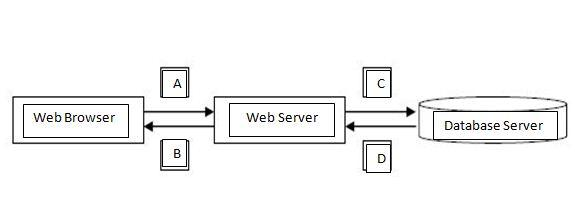
Keterangan:
-
Permintaan data berupa URL (request) dari browser ke server.
-
Pengiriman data berupa HTML (response) dari server ke browser.
-
Permintaan record berupa Query (request) dari server ke database.
-
Pengiriman record berupa Array (response) dari database ke server.
Analisa Pengguna Sistem
siapa saja yang menggunakan sistem dan kebutuhan masing2 pengguna terhadap sistem
| Pengguna |
Deskripsi Kebutuhan dalam Sistem |
| Tamu |
Cuma bisa mengunduh file yang di share secara public |
| Mahasiswa |
Dapat mengunduh file non-public |
| |
Dapat mengunggah file (tugas) untuk dikirim ke dosen |
| Dosen |
Bisa membuat halaman baru sesuai makul |
|
Melihat seluruh hasil upload'an dari mahasiswa |
| Administrator |
Mengatur semua aktivitas, user, file dan manajemen admin |
Diagram FLowchart
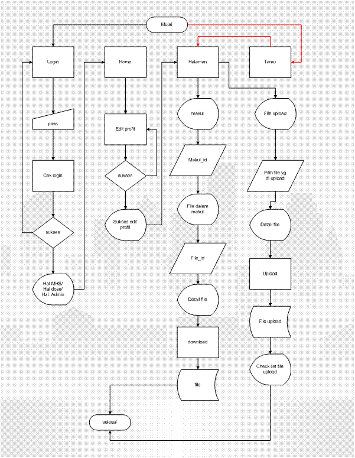
Desain ERD
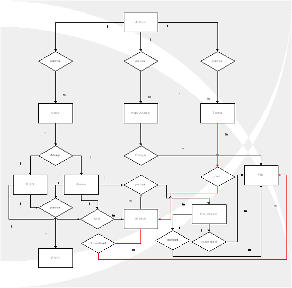
Diagram Use Case
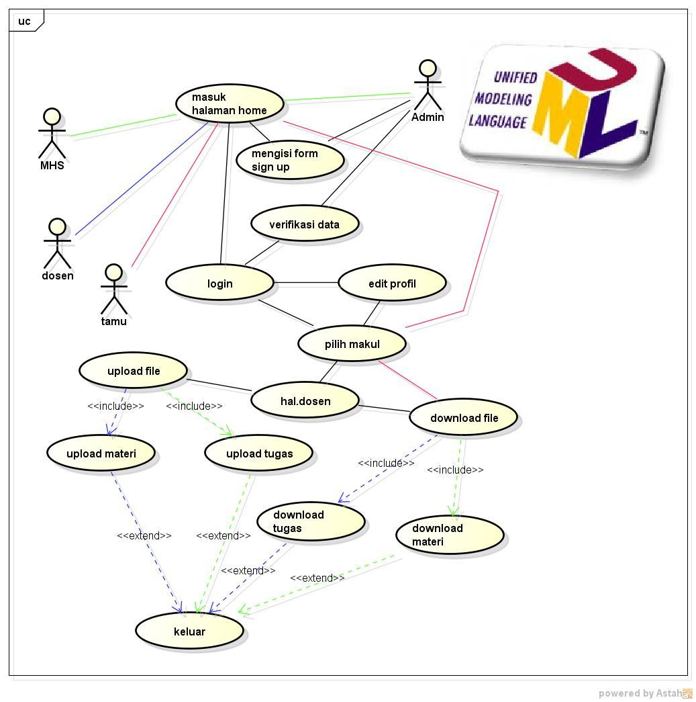
Diagram Activity
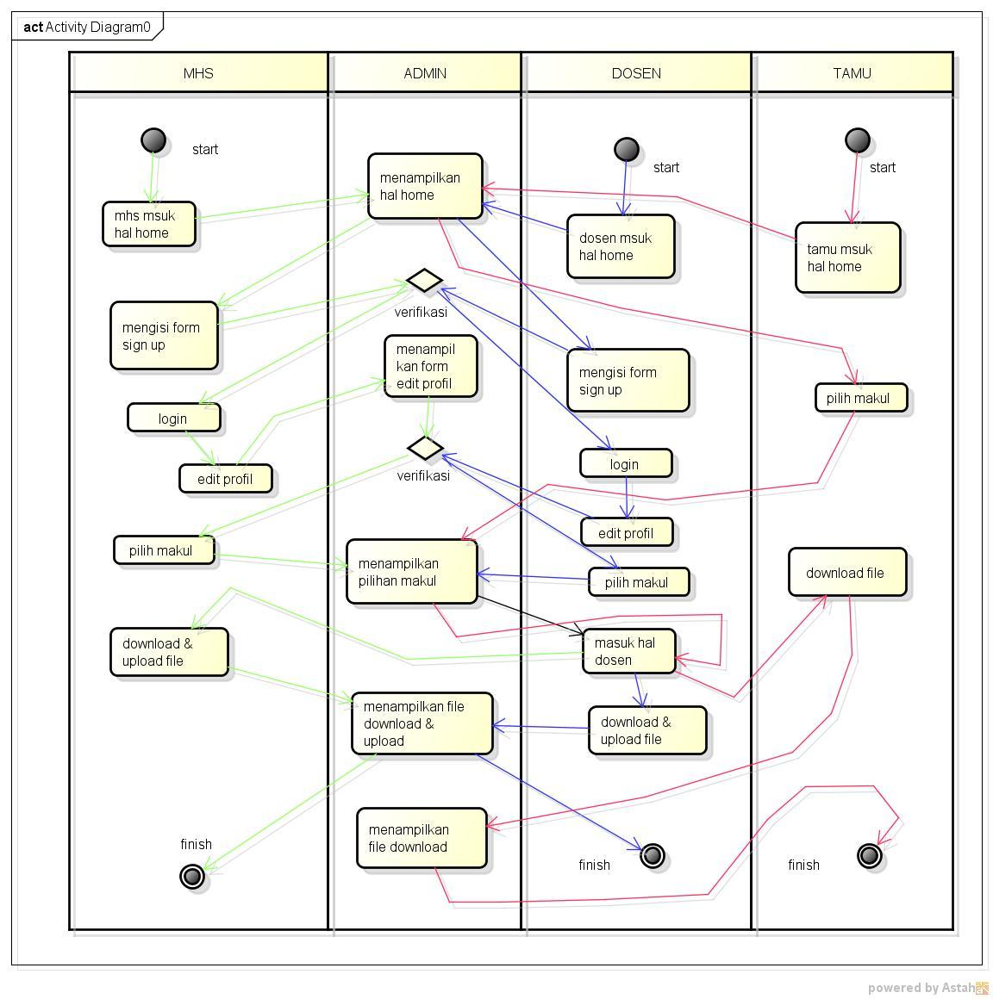
Diagram Class
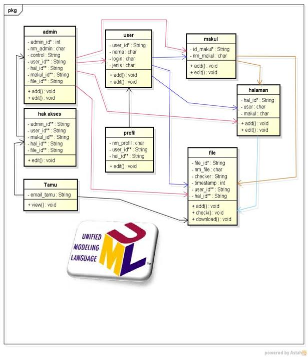
Desain Database FIllatte.
Desain Database
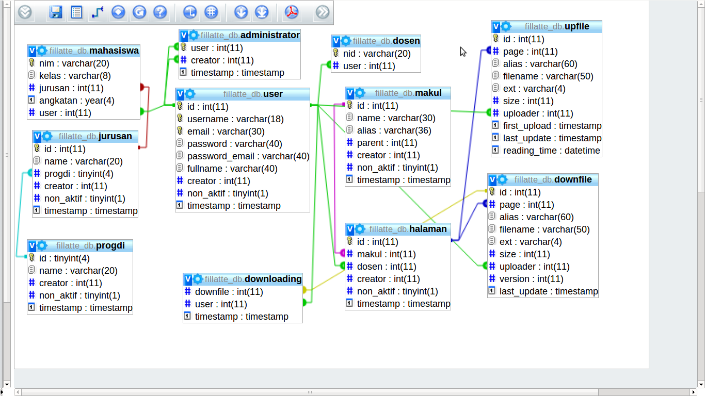
ini adalah desain database fillatte.
saya akan sedikit memberi penjelasan. Di sana ada tabel user dengan primary key id, dan mempunyai 2 unik key yaitu username dan email. tujuannya adalah agar tidak ada username maupun email yg sama untuk user yg berbeda.
Kemudian di sini ada tabel dosen dan mahasiswa yang menggunakan primary key nomer induk tapi dengan foreign key user id. maksudnya adalah bahwa user dibagi 2 yaitu mahasiswa dan dosen. kemudian ada tabel administrator adalah tempat user yang diberi amanat sebagai administrator dimasukkan ke dalamnya. administrator adalah yang mengatur seluruh kerja sistem.
kemudian yang menjadi inti adalah tabel upfile dan downfile.
upfile menyimpan semua tentang file yang diupload mahasiswa. di situ ada first_upload yang artinya pertama kali user tersebut upload dan last_upload artinya jika sewaktu2 user akan melakukan revisi akan tercatat juga. kemudian untuk readed_time adalah kapan dosen mendownload / melihat / memeriksa file tersebut.
Downfile adalah catatan file2 yang diupload dosen. Setiap user yg mendownload file tersebut, akan tercatat ke dalam tabel downloading. terima kasih.
Desain Interace Fillatte.
Diagram Sekuen Tamu
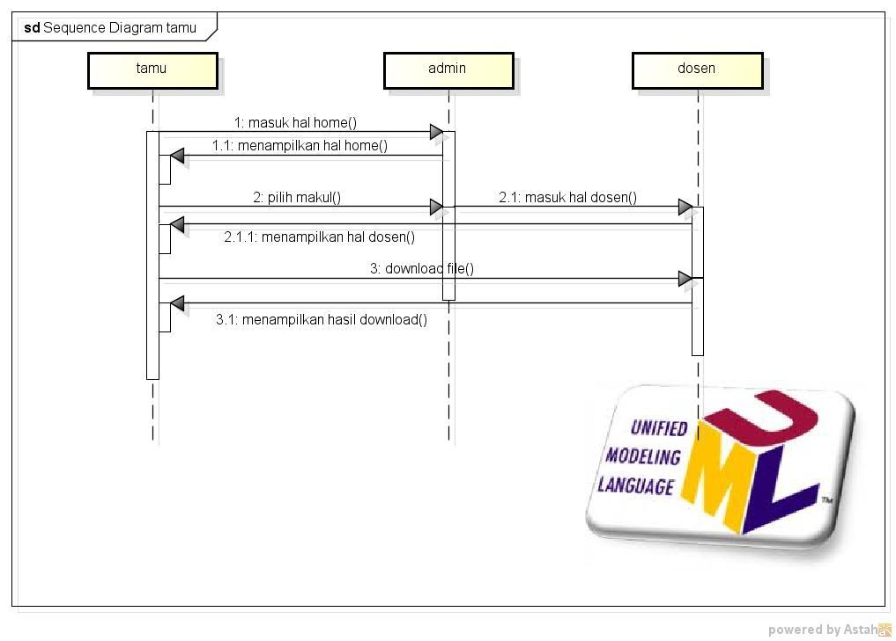
DIagram Sekuen Mahasiswa
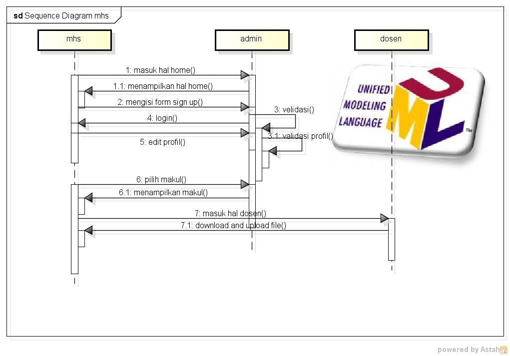
Diagram Sekuen Dosen
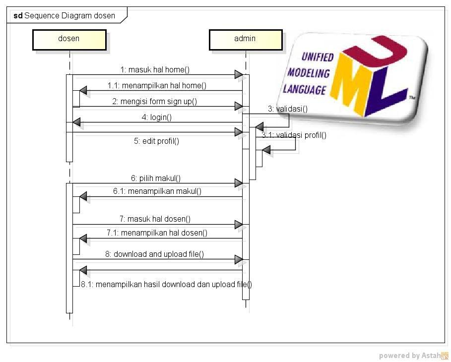
LKT
LKT Login
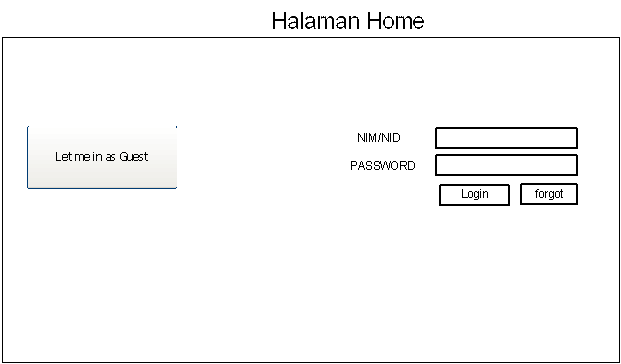
di sini bisa kita lihat halaman login fillatte. yah, standar2 saja sepeti web lainnya.
bedanya fillatte menggunakan NIM atau NID untuk login tapi mengijinkan user tamu juga.
LKT Browse
di sebelah kiri adalah daftar kategori yang digunakan untuk mencari makul dan jika diklik maka akan ada pilihan untuk dosen
untuk menuju ke halaman download
LKT Page
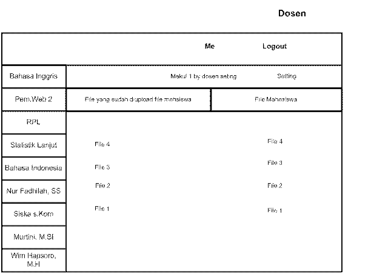
ini adalah halaman di mana user mahasiswa mendownload materi dosen dan mahasiswa mengupload tugas untuk dosen
Penjelasan Lengkap mengenai Desain Interface akan disampaikan bersama penjelasan implementasi.
(Coding & Testing)
Your browser doesn't support the features required by impress.js, so you are presented with a simplified version of this presentation.
For the best experience please use the latest Chrome, Safari or Firefox browser.